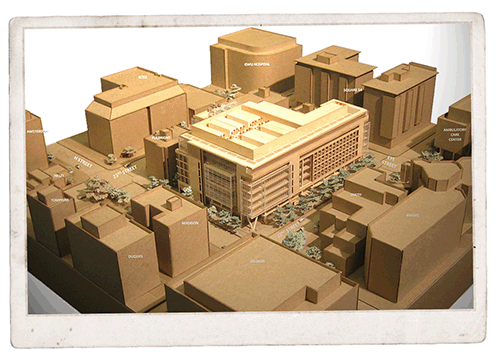

December 2010

Science and Engineering Complex Takes Next Steps
University files for city zoning approval, faculty continues review of teaching, lab space.
Plans for the future Science and Engineering Complex moved forward in November, as university officials filed an application for zoning approval from the D.C. Zoning Commission and GW faculty members met to provide further input on the building's interior spaces.
The zoning application for the state-of-the-art facility, which would nearly double the space available at GW for science and engineering, was filed November 15. The new complex—to be located on the site of the existing University Parking Garage, at 22nd and H streets, NW—had received a unanimous green light by the GW Board of Trustees in mid-October.
The board felt the new building would "transform GW and help us strengthen our reputation as a premier research institution in the nation's capital," Chairman W. Russell Ramsey, B.B.A. '81, said at the time. "It will be a powerful magnet for world-class faculty and students," he said.
The building's eight stories above-grade and six below (four of which will be for parking) will provide space for teaching and research laboratories for GW's Columbian College of Arts and Sciences and the School of Engineering and Applied Science. The School of Medicine and Health Sciences, among other schools and departments, also will be involved in research there.
A typical floor in the new complex would include research and teaching areas, as well as faculty offices and breakout spaces.
The design of the building will target silver-level certification from the U.S. Green Building Council's Leadership in Energy and Environmental Design (LEED) rating system. Plans call for a variety of sustainable elements, including: dedicated parking spaces for recharging electric cars, a green roof, a cistern to collect storm water run-off for reuse, and strategically-located sunshades on the exterior to reduce energy demands.
There also are plans for a small park to be built between Jacqueline Bouvier Kennedy Onassis (JBKO) Hall and Munson Hall.
The site, as well as the building project's basic parameters (such as height and size), were approved by the D.C. Zoning Commission as part of GW's 2007 Foggy Bottom Campus Plan. This month's building-specific filing will be the basis for public hearings and a final decision by the commission.
The full filing to the commission is available on GW's Neighborhood website.
Pending approval by the zoning commission, project construction is expected to begin in mid-2011 with a completion date anticipated in late-2014.
SEC Stats
- Square footage: approximately 290,000 assignable square feet for teaching and research, which excludes spaces such as corridors, mechanical rooms, and space for air circulation.
Floors: 14 (eight floors above-grade and two floors below for programming space; four floors below-grade for parking)
- Parking: Up to 400 spaces
- Completion: Late-2014
- Preliminary cost estimate: $275 million, funded primarily with lease payments from Square 54 (across from GW Hospital), indirect cost reimbursement from grants and contracts supporting faculty research, and philanthropic gifts from the GW community.
|